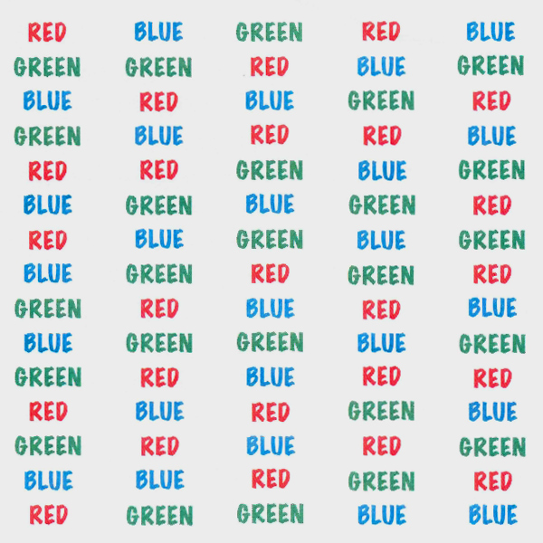
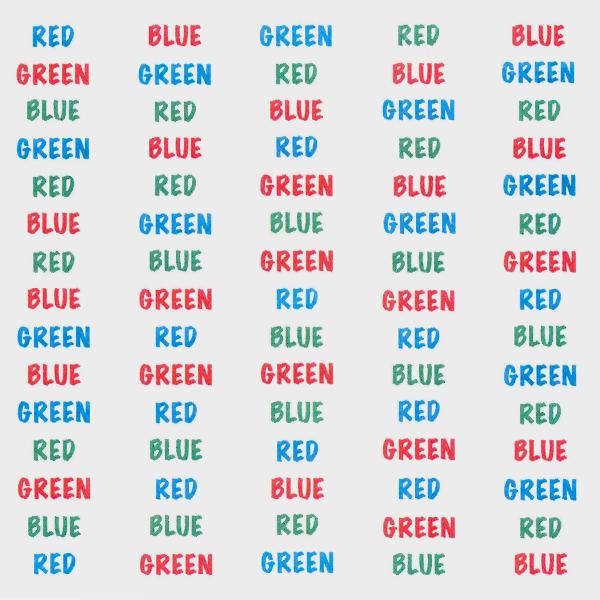

Stroop Effect
Say the COLOR of each word
as quickly as you can.
Example:
If you see GREEN, say "Red."
When you’re done, press the
spacebar or the STOP button
to stop the timer.
If you see GREEN, say "Red."

